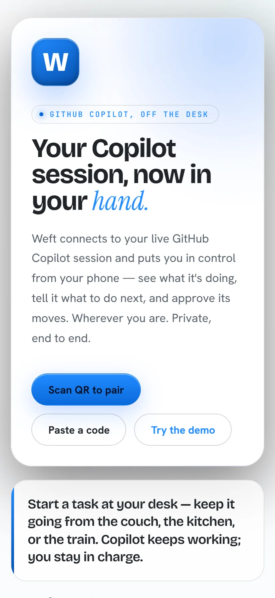
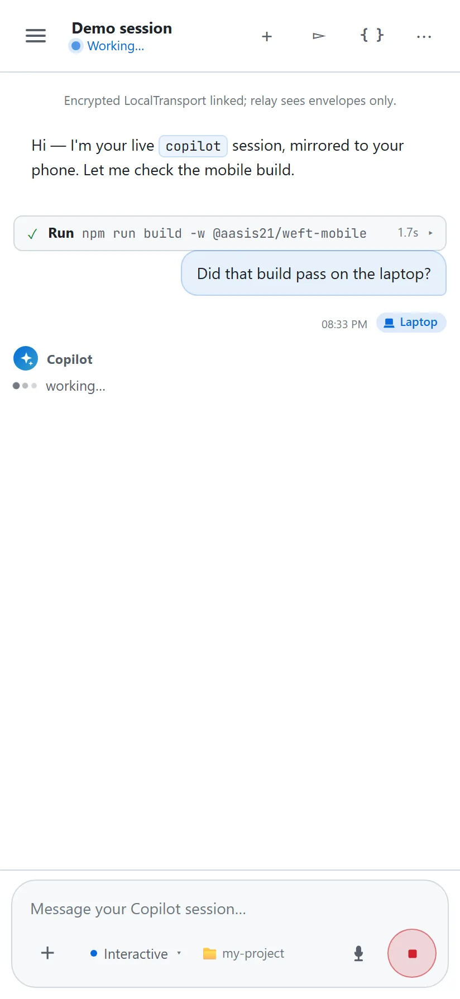

Your Copilot session, now in your weft.
Weft mirrors your live GitHub Copilot terminal session to your phone over an end-to-end encrypted relay. See what it's doing, tell it what to do next, and approve its moves — wherever you are.
PS>irm https://useweft.netlify.app/install.ps1 | iex
$curl -fsSL https://useweft.netlify.app/install.sh | bash
utils.test.ts.Your desk keeps working. You don't have to be there.
Weft joins your live `copilot` session as a second client. Your phone sees exactly what your terminal sees, and can act on it.
- 01
Mirror the session.
Every message, tool call, and diff streams to your phone in real time, laid out like a real chat.
- 02
Approve from anywhere.
Shell commands and edits that need your sign-off show up as an inline card — allow once, always, or deny.
- 03
Talk back.
Type or speak a reply and it lands in your terminal session exactly like you'd typed it there.
- 04
End-to-end encrypted.
The relay only ever sees opaque envelopes — pairing and every message are encrypted device-to-device.
- 05
Bring your own backend.
Pair over Supabase realtime or a Visual Studio dev tunnel — pick the transport, or self-host it.
- 06
One command, zero setup.
weft starton your desk, scan a QR from your phone. No accounts to create.
It looks like your terminal, in your pocket.
The hero above is a stylized mock-up — these two are real, unretouched captures: the onboarding screen, and a live working session.


Live
Connected and streaming your session.
Working
Copilot is actively running a turn.
Needs approval
Waiting on you to allow or deny.
Offline
Desk session ended or unreachable.
Your relay, your call.
Weft pairs over one of two relays — both carry nothing but end-to-end-encrypted envelopes. Start on the hosted one in seconds, or run your own with no third party anywhere in the path.
Weft's hosted relay
Pairs over a Supabase Realtime channel the creator operates. The installer wires it up for you — no account, no keys, nothing to configure. Because every payload is encrypted device-to-device, the relay only ever sees ciphertext.
- Scan the QR and you're live — nothing to set up
- Publishable key + row-level security; the operator can't read your session
- It's the default — you only run this to switch back from a dev tunnel
Your own dev tunnel
Run the relay yourself on a Visual Studio Dev Tunnel — a private channel under your own account, with no shared infrastructure between your desk and your phone. You bring it up; pairing simply attaches to it.
- Nothing in the path but your two devices and a tunnel you own
weft devtunnel startowns login + lifecycle; pairing just attaches- Changed your mind?
weft set-transport supabaseflips back — no keys, ever
Either way, pairing and every message are AES-256-GCM encrypted — the
relay is untrusted infrastructure that learns only timing and channel ids. The installer
seeds the hosted Supabase creds whichever transport you pick, so weft set-transport
flips between the two anytime — no URL, no key.
Up and running in one command.
The installer registers the weft command and the Copilot CLI extension. Tabs default to your shell and remember your choice.
# install PS>irm https://useweft.netlify.app/install.ps1 | iex ✓ installed — run `weft start` from anywhere
# install $curl -fsSL https://useweft.netlify.app/install.sh | bash ✓ installed — run `weft start` from anywhere
Two thin ends, an opaque middle.
The Copilot CLI extension and the mobile app do all the real work; the relay just forwards encrypted envelopes.
Everything you can say.
/weft, inside a live Copilot session, mirrors
that session to your phone. weft start runs a standalone
Device Station your phone drives to spawn fresh sessions in your registered projects.
Station pairings can be ephemeral (a new QR each start — the default) or
persistent (reconnect with no rescan); a /weft pairing is always
per-session.
| /weft [supabase|devtunnel] | In a Copilot session: pair your phone to the current session. Optional arg overrides the transport for this session only. |
| weft start | Start the standalone Device Station and print a QR to pair from your phone. |
| weft add-project <name> <path> | Register a project directory Weft can launch sessions in. |
| weft remove-project <name> | Forget a registered project. |
| weft list-projects | List registered projects and which one is default. |
| weft set-default <name> | Choose the project a bare pairing launches into. |
| weft set-transport <supabase|devtunnel|clear> | Choose (or clear) the pairing transport. |
| weft set-pairing <persistent|ephemeral> | Device Station: reuse one channel/key across restarts (persistent) or mint a fresh one each start (ephemeral, the default). |
| weft rotate-pairing | Device Station: force a brand-new persistent channel/key, invalidating the old QR. |
| weft show-transport | Print the transport currently in effect and where it came from. |
| weft set-name <name> | Set the display name this device shows to your phone. Defaults to your OS hostname. |
| weft show-name | Print the device name currently in effect and where it came from. |
| weft devtunnel <start|status|stop> | Bring up, check, or tear down the shared dev tunnel relay (used when the transport is devtunnel). |
| weft help | Show usage. |